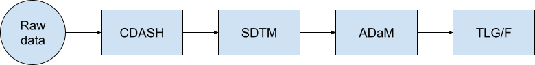
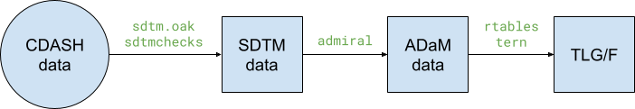
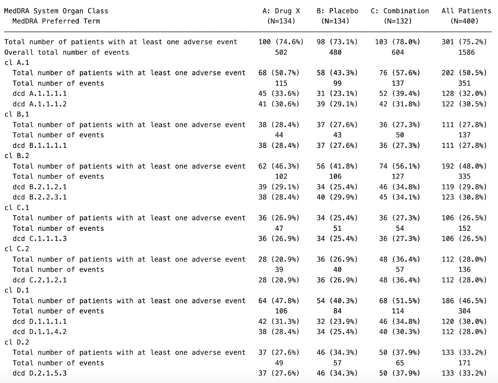
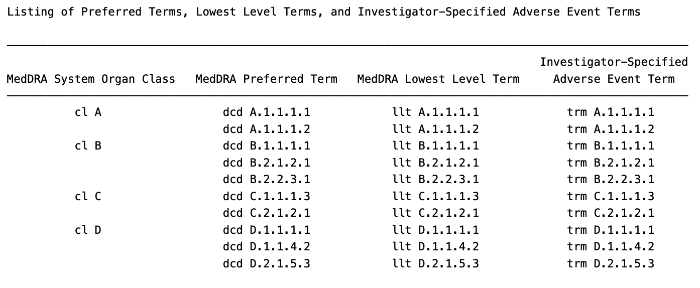
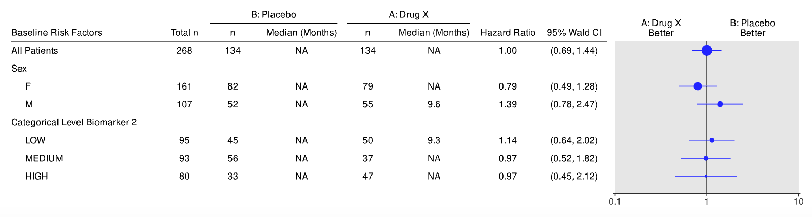

Clinical trials are a crucial component of the pharmaceutical industry, providing the evidence needed to demonstrate the safety, efficacy, and overall benefit of new drugs or treatments.
Clinical trials reporting, a detailed process in itself, is guided by regulatory agencies like the U.S. Food and Drug Administration (FDA), the European Medicines Agency (EMA), and the International Conference on Harmonisation (ICH).
The results of these trials must be carefully reported to protect public health and foster trust in the pharmaceutical industry. Pharmaverse and R directly support this need by providing open-source, transparent, and standardized tools that enable consistent data handling and reporting.
Current challenges
Clinical trials face several challenges in their current state, which can be broadly categorized into three key areas:
Ethical and Transparency Issues
International ethical standards, including the Declaration of Helsinki, emphasize that the results of all clinical trials—whether positive, negative, or inconclusive—should be made publicly accessible. Nevertheless, empirical studies show that compliance remains inconsistent. In particular, early-phase or smaller studies, as well as trials with negative outcomes, are less likely to be reported in a timely or visible manner (SOCRA; BMJ/PMC analysis). Furthermore, evidence suggests that industry sponsorship can introduce bias at various stages of trial design, analysis, and reporting, which reinforces the importance of transparent dissemination of all findings (Cochrane review, 2017).
Cost and Efficiency Challenges
Clinical trials are expensive, often exceeding hundreds of millions of dollars, and this can inhibit the development of drugs for rare diseases where the return on investment is limited by the small size of the patient population. Failure in clinical trials – especially in late phase trials that often include upwards of 1000 patients – can incur huge losses, compounded by the complex and varying nature of global regulations around them.
Data and Reproducibility Concerns
Reproducibility is key for independent verification of clinical trial results. Differences in data collection methods, formats, and methodologies often hinder cross-study comparisons, especially if a study was not designed with international standards that are consistent and reproducible.
Pharmaceutical Standards
The Clinical Data Interchange Standards Consortium (CDISC) provides globally accepted data standards, which are a set of guidelines and models used to standardize the collection, exchange, and analysis of clinical trial data. These standards aim to improve efficiency, data quality, and interoperability across various clinical research areas.
In this article specifically, the key CDISC Standards we are going to highlight are Clinical Data Acquisition Standards Harmonization (CDASH), Study Data Tabulation Model (SDTM) and Analysis Data Model (ADaM).
CDASH - Clinical Data Acquisition Standards Harmonization
CDASH provides guidelines for standardized data collection across clinical trial studies. It ensures that data collected at clinical sites is structured, consistent, and easily translatable into regulatory submission formats like SDTM.
SDTM - Study Data Tabulation Model
SDTM Implementation Guide is a standard for structuring and organizing clinical study datasets for regulatory submissions (e.g., to the FDA, EMA). SDTM data is generally treated by the FDA as the raw or source data, since it represents the collected study information in a standardized format.
Importantly, SDTM restructures the collected data for consistency and transparency across studies, but it does not derive or create new analysis variables — that role is covered by ADaM.
ADaM - Analysis Data Model
ADaM Implementation Guide ensures traceability from SDTM data to analysis-ready datasets. This model establishes a standardized way to create datasets for statistical analysis from SDTM organized data, facilitating efficient analysis and reporting.
The Role of R in Clinical Trials
Nowadays, R is widely used in clinical trial analysis due to its flexibility, powerful statistical capabilities, and strong support for regulatory compliance. R provides:
- Robust Statistical Analysis used for survival analysis, mixed models, and Bayesian statistics.
- Data Cleaning & Transformation facilitated by specialized packages and modeling tools.
- Reproducibility & Open Source Solutions to ensure that clinical reports and submissions can be automated, reducing errors.
- Integration with CDISC Standards with the help of various R packages that can structure data according to SDTM and ADaM requirements.
Pharmaverse
Pharmaverse is a collaborative open-source ecosystem of tools for clinical trial data processing and regulatory compliance, currently consisting mainly of R packages but now also including emerging Python software. It provides resources that streamline the implementation of CDISC standards such as SDTM, ADaM, and Define-XML.
- Key Pharmaverse Packages:
{sdtm.oak}– Helps in structuring SDTM datasets.{admiral}– Facilitates ADaM dataset creation.{teal}– Builds interactive R/Shiny dashboards for exploratory clinical data analysis.
- Related R Packages:
{rtables}– Creates regulatory-compliant tables for clinical reports.{tern}– Creates regulatory-compliant tables/graphs for clinical reports.
These are not the only packages that are used, but these are the ones that will be referenced within this blogpost.
Pharmaverse doesn’t have a dedicated CDASH package, but its metadata-driven approach means you can still work with CDASH concepts to connect source data collection to SDTM mapping.
A more comprehensive list of packages can be found here: https://pharmaverse.org/e2eclinical/
Data Pipeline
In Clinical Trial Reporting, the data pipeline could follow this standard:

The raw data from patients is collected according to CDASH guidelines, then processed with SDTM and ADaM standards to produce related Tables, Listings, and Graphs/Figures outputs that correspond to all aspects of a specific clinical trial.
Starting with the CDASH data from a study, the preparation process starts with {sdtm.oak} and {sdtmchecks} packages from the Pharmaverse in order to get them ready for SDTM formatted datasets.
Subsequently, ADaM standards are applied on this data using the {admiral} package, which can then be analysed and transformed into Tables, Listings, and Graphs/Figures using non-pharmaverse (but still related) packages such as {rtables} and {tern}.

The Pharmaverse contains some repositories with test data that can help visualize and make sense of this, namely pharmaversesdtm and pharmaverseadam.
There is also the {random.cdisc.data} package that can be used to generate randomized CDISC data for exploratory purposes.
More information about these datasets can be found in their respective documentation sites.
Tables, Listings, Graphs/Figures
The content of clinical trial reports contains 3 different types of outputs:
- Tables
- Listings
- Graphs/Figures
These outputs play a vital part to summarize the results of a clinical trial during reporting. They can summarize safety, efficacy, and exploratory outcomes (such as biomarker analyses).
In the next sections, we will be using the datasets in the {random.cdisc.data} package to help create example outputs used in clinical trials reports. These will be split into two sections each, namely “Data Setup” and “Standard Output Generation”.
Tables
In this example, we will be creating a Standard Adverse Events Table (AET02) using the cadsl and cadae datasets from the random.cdisc.data package (see the TLG Catalogue for reference).

Data Setup:
library(random.cdisc.data)
library(dplyr)
library(tern)
# Ensure character variables are converted to factors so that
# empty strings and NAs are explicit missing levels.
adsl <- df_explicit_na(cadsl)
adae <- df_explicit_na(cadae) %>%
var_relabel(
AEBODSYS = "MedDRA System Organ Class",
AEDECOD = "MedDRA Preferred Term"
) %>%
filter(ANL01FL == "Y")
# Define the split function
split_fun <- drop_split_levelsAET02 Output Generation:
# Standard Table for AET02 --------------------------------------------------------------
lyt <- basic_table(show_colcounts = TRUE) %>%
split_cols_by(var = "ACTARM") %>%
add_overall_col(label = "All Patients") %>%
analyze_num_patients(
vars = "USUBJID",
.stats = c("unique", "nonunique"),
.labels = c(
unique = "Total number of patients with at least one adverse event",
nonunique = "Overall total number of events"
)
) %>%
split_rows_by(
"AEBODSYS",
child_labels = "visible",
nested = FALSE,
split_fun = split_fun,
label_pos = "topleft",
split_label = obj_label(adae$AEBODSYS)
) %>%
summarize_num_patients(
var = "USUBJID",
.stats = c("unique", "nonunique"),
.labels = c(
unique = "Total number of patients with at least one adverse event",
nonunique = "Total number of events"
)
) %>%
count_occurrences(
vars = "AEDECOD",
.indent_mods = -1L
) %>%
append_varlabels(adae, "AEDECOD", indent = 1L)
result <- build_table(lyt, df = adae, alt_counts_df = adsl)
resultListings
In this example, we will be creating a Standard Listing of Preferred Terms, Lowest Level Terms, and Investigator-Specified Adverse Event Terms (AEL01) using the {cadae} dataset from the {random.cdisc.data} package.

Data Setup:
library(random.cdisc.data)
library(dplyr)
library(rlistings)
out <- cadae %>%
select(AESOC, AEDECOD, AELLT, AETERM) %>%
unique()
var_labels(out) <- c(
AESOC = "MedDRA System Organ Class",
AEDECOD = "MedDRA Preferred Term",
AELLT = "MedDRA Lowest Level Term",
AETERM = "Investigator-Specified\nAdverse Event Term"
)AEL01 Output Generation:
# Standard Listing for AEL01 ------------------------------------------------------------
lsting <- as_listing(
out,
key_cols = c("AESOC", "AEDECOD", "AELLT"),
disp_cols = names(out),
main_title = "Listing of Preferred Terms, Lowest Level Terms, and Investigator-Specified Adverse Event Terms"
)
head(lsting, 20)Graphs/Figures
In this example, we will be creating a Standard Plot for Subgroup Analysis of Survival Duration (FSTG02) using the {caddtte} dataset from the {random.cdisc.data} package.
 Subgroup Analysis of Survival Duration - FSTG02">
> Subgroup Analysis of Survival Duration - FSTG02
Data Setup:
library(random.cdisc.data)
library(tern)
library(dplyr)
library(forcats)
library(nestcolor)
preprocess_adtte <- function(adtte) {
# Save variable labels before data processing steps.
adtte_labels <- var_labels(adtte)
adtte <- adtte %>%
df_explicit_na() %>%
dplyr::filter(
PARAMCD == "OS",
ARM %in% c("B: Placebo", "A: Drug X"),
SEX %in% c("M", "F")
) %>%
dplyr::mutate(
# Reorder levels of ARM to display reference arm before treatment arm.
ARM = droplevels(forcats::fct_relevel(ARM, "B: Placebo")),
SEX = droplevels(SEX),
is_event = CNSR == 0,
# Convert time to MONTH
AVAL = day2month(AVAL),
AVALU = "Months"
) %>%
var_relabel(
ARM = adtte_labels["ARM"],
SEX = adtte_labels["SEX"],
is_event = "Event Flag",
AVAL = adtte_labels["AVAL"],
AVALU = adtte_labels["AVALU"]
)
adtte
}
anl <- cadtte %>%
preprocess_adtte()FSTG02 Output Generation:
# Standard Plot for FSTG02 -------------------------------------------------------
anl1 <- anl
df <- extract_survival_subgroups(
variables = list(tte = "AVAL", is_event = "is_event", arm = "ARM", subgroups = c("SEX", "BMRKR2")),
data = anl1
)
result <- basic_table() %>%
tabulate_survival_subgroups(
df = df,
vars = c("n_tot", "n", "median", "hr", "ci"),
time_unit = anl1$AVALU[1]
)
result
plot <- g_forest(tbl = result)
plotConclusion
Clinical trial reporting remains fundamental to public trust and to the integrity of drug development. Nevertheless, the field continues to face persistent transparency deficits, escalating costs, and reproducibility challenges.
Adopting open standards and collaborative platforms—such as the Pharmaverse ecosystem—together with broader open-source initiatives in R and related technologies, offers a practical path forward. These approaches enable greater transparency, improved efficiency, and rigorous, standards-based data practices that strengthen the scientific foundation of clinical research. Consequently, the level of trust can be further enhanced, and public welfare can be assured.
Join us in part 2 of this series where we take a look at interactive clinical trials data analysis using packages that create custom shiny applications specifically for this space.
Resources
Last updated
2026-01-15 21:08:19.490108
Details
Reuse
Citation
BibTeX citation:
@online{hee2025,
author = {Hee, Fabian and Kouretsis, Alexandros and , APPSILON},
title = {Faster {Clinical} {Trial} {Reporting:} {A} {Beginner’s}
{Guide} to {Implementing} {CDISC} {SDTM} and {ADaM} {Standards} with
{Open-Source} {R} {Packages}},
date = {2025-09-12},
url = {https://pharmaverse.github.io/blog/posts/2025-09-12_faster_clinical_trial_reporting/faster_clinical_trial_reporting.html},
langid = {en}
}
For attribution, please cite this work as:
Hee, Fabian, Alexandros Kouretsis, and APPSILON. 2025. “Faster
Clinical Trial Reporting: A Beginner’s Guide to Implementing CDISC SDTM
and ADaM Standards with Open-Source R Packages.” September 12,
2025. https://pharmaverse.github.io/blog/posts/2025-09-12_faster_clinical_trial_reporting/faster_clinical_trial_reporting.html.